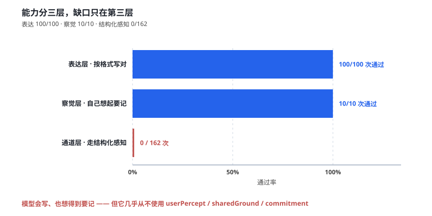
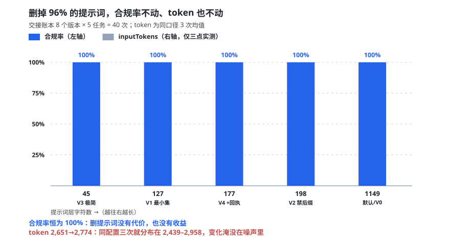
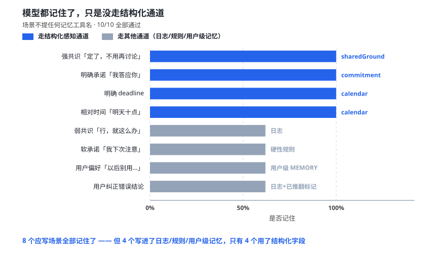
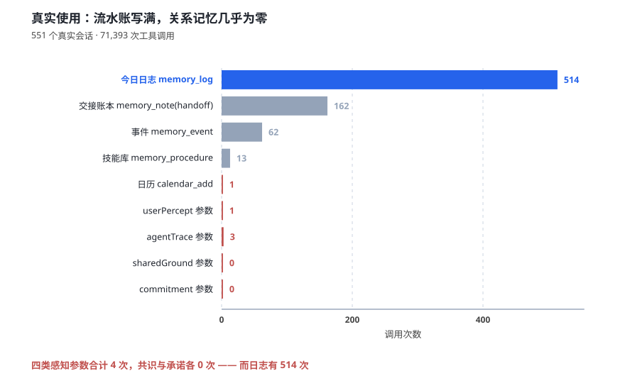
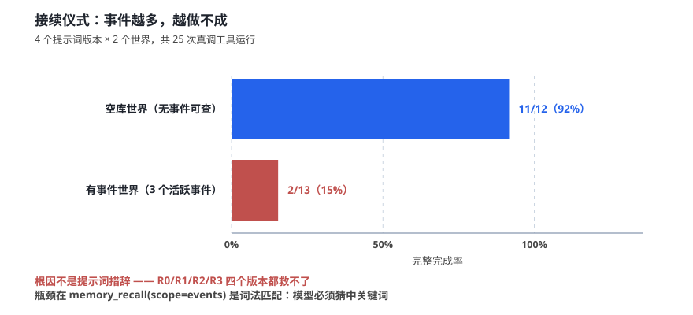
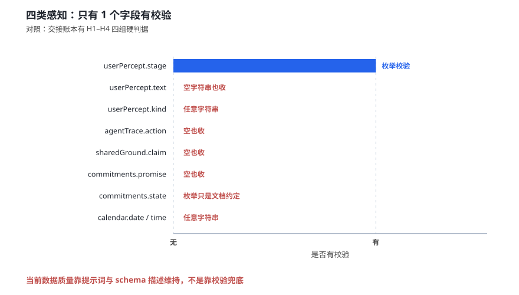

1 问题：记忆系统看起来在工作，但有一半能力从未被调用
过去两周，我陆续写了六份研究文档，讨论记忆工具该不该加校验、提示词能不能精简、接续仪式为什么在长会话里失败。这些文档都建立在一个共同的假设上：只要把工具设计对、把提示词写清楚，模型就会按预期使用记忆。
这个假设值得检验。因为如果它成立，那么用户在真实使用中应该能看到用户画像在生长、共识在沉淀、日历在积累。但我自己的使用体验不是这样：我很少看到共识性记忆、用户画像、情感类共同经历，以及日历条目。
于是做了一件事：把实验从「单一写入」扩展到「全量记忆面」，然后再用真实语料对照。结果是三层完全不同的图景——模型会写、也想得到要记，但它几乎不走那套结构化字段。
本文是这次调查的完整记录。所有数字都能用配套测试套件复现，数据集、判据、负路径全部公开。
2 方法：三层实验 + 真实语料对照
2.1 为什么不能用子代理做实验
第一版实验设计是在宿主内部起子代理当被测模型。这个方法有个致命缺陷：子代理本身就跑在被注入记忆提示词的环境里，它看到的是真实注入内容——而那恰恰是自变量。你无法区分「是实验提示词起作用」还是「宿主注入起作用」。这是教科书级的观察者效应。
所以改用外部驱动：
外部 harness（Node 脚本）
↓ spawn
dsh --profile memexp --json "<任务>" ← 插件真加载，21 个工具真存在
↓ NDJSON stdout
离线判分（生产判据函数 + 落盘产物核验）被测模型只看到实验设定的提示词，不受当前会话影响。
2.2 四层隔离：绝不写真实记忆库
这是整个实验最需要小心的地方。插件按会话 cwd 派生工作区目录，配置与 DSH_HOME 都拦不住——默认配置里 memoryRoot 的值是字面量 ~/.dsh/memory/workspaces，插件用 os.homedir() 展开它。所以必须显式覆盖成沙箱绝对路径。
| 层 | 手段 | 实测结果 |
|---|---|---|
| 配置隔离 | 独立 DSH_HOME + 显式覆盖 memoryRoot / userMemoryDir | 真实库 1,231 个工作区，实验期间零变化 |
| 文件系统沙箱 | DSH_PERMISSION_MODE=workspace-write | 越界写被拒；越界读被拒 |
| 升级路径封死 | headless 无审批通道 | danger-full-access → requires approval, but no approval channel → 失败关闭 |
| 完整性哨兵 | 每次任务前后全量 sha256（5,379 真实文件 + 664 产品文件 + 27 提示词层） | 162 份报告，违规 0 |
3 结果：能力分三层，缺口在第三层
把「模型会不会用记忆」拆成三个可分别测量的能力之后，图景立刻清楚了。

3.1 表达层：给了明确指令，能不能按格式写对 —— 100%
用 20 条自包含任务（覆盖缺陷修复、新功能、调研、发布等 14 个类型）测交接账本，8 个提示词版本各跑 5 条：
| 版本 | snapshotSlimMaintain 字符 | 合规率 | 一次写对 |
|---|---|---|---|
| 产品默认 | 1,149 | 100% | 0/5 |
| V0 完整 | 1,149 | 100% | 1/5 |
| V1 最小集 | 127 | 100% | 5/5 |
| V2 最小集+禁后缀 | 198 | 100% | 5/5 |
| V3 极简一句 | 45 | 100% | 0/5 |
| V4 V2+指向回执 | 177 | 100% | 5/5 |
再看 7 个记忆面（共识 / 人侧观察 / 承诺 / 日历 / 事件归属 / 日志 / 技能库）在 4 个提示词环境下的表现：
| 环境 | 提示词状态 | 结果 |
|---|---|---|
| 基线 | 默认 1,149 字符 | 15/15 |
| 极简 | 45 字符 | 15/15 |
| 无注入 | injectEnabled: false（记忆注入全关） | 15/15 |
连记忆注入全部关掉，模型仍然正确写出了四类感知、共识、承诺、日历、事件归属、日志、技能库。决定遵循能力的是工具 schema，不是提示词。
3.2 顺带推翻了一个流行结论：精简提示词省不到 token

之前有一份设计文档主张「省 1,498 字符 + 提高合规率」。实测下来：
| 主张 | 实测 | 判定 |
|---|---|---|
| 省字符 | 可压 1,149 → 198，省 951 字符/请求 | 成立 |
| 省 token | 默认均值 2,651，极简均值 2,774；同配置三次测量就分布在 2,439–2,958 | 变化落在噪声内 |
| 提高合规率 | 8 版本 × 5 任务 = 40/40；7 记忆面 × 15 场景 × 4 环境 = 60/60 | 天花板已是 100% |
原因是结构性的。单次请求的固定成本构成：
system prompt 静态段（含 renderMemoryStatic 硬编码） 6,220 字符
21 个工具 description + schema 20,904 字符
────────────────────────────────────────────────────────────
单次请求 inputTokens 约 2,400–3,000snapshotSlimMaintain 只占其中约 4%。删 1,104 字符，占比不到二十分之一，token 变化自然淹没在噪声里。
不过有一个指标确实有明显区分度：「一次写对」的比例。提示词里把四段标题单独拎出来说「必须逐字」的三个版本，一次都没被拒；夹在长散文里的版本，几乎每条都要先错一次再靠判据门纠正。
3.3 察觉层：不给指令，会不会自己想起要记 —— 100%
前面所有场景都明确写了「如果产生了共识，就用 sharedGround 记下来」。真实对话里没人这么提醒。所以又做了一组隐性触发实验：场景里完全不提任何记忆工具名，只给对话原文加一句「按你平时的习惯处理」。

结果 10/10 全过。但关键不在通过率，在于走的是哪条通道：
| 场景 | 模型实际做的 | 通道 |
|---|---|---|
| 强共识「定了，不用再讨论」 | sharedGround 1 条 | 结构化 ✅ |
| 明确承诺「我答应你」 | commitment 1 条 | 结构化 ✅ |
| 明确 deadline | calendar_add 1 次 | 结构化 ✅ |
| 相对时间「明天十点」 | calendar_add，正确换算成 2026-10-30 | 结构化 ✅ |
| 弱共识「行，就这么办」 | 写进日志，回复里还点明「用户已确认」 | 日志 |
| 软承诺「我下次注意」 | 升级成每轮加载的硬性规则 | 硬性规则 |
| 用户偏好「以后别用…」 | 写进用户级 MEMORY.md + memory_user | 用户级记忆 |
| 用户纠正错误结论 | 写进日志 + 标成「已被推翻的结论」 | 日志 |
这个结果值得停下来看一眼：模型不是没记住，它记得比要求的还多。 软承诺那条，它甚至判断「不该只是下次注意」，主动升级成了每轮加载的硬性规则——这比写一条 commitment 更有效。
3.4 通道层：记住了，但几乎不走结构化感知 —— 0/162
那么真实使用中呢？扫了本机 551 个真实会话、71,393 次工具调用：

| 通道 | 调用次数 |
|---|---|
今日日志 memory_log | 514 |
交接账本 memory_note(kind=handoff) | 162 |
事件 memory_event | 62 |
技能库 memory_procedure | 13 |
日历 calendar_add | 1 |
| 四类感知参数合计 | |
userPercept | 1 |
agentTrace | 3 |
sharedGround | 0 |
commitment | 0 |
162 次交接账本调用，携带四类感知参数的是 0 次。
4 为什么是零：观测面的问题，不全是模型的问题
第一次统计出这个数字时，我以为是模型能力不足。后来发现更准确的解释是：感知参数挂在可选位置。
memory_note(kind=handoff, content=...,
userPercept=..., agentTrace=...,
sharedGround=..., commitment=...)
↑ 模型得先决定"我要写账本"，才会路过这四个参数而对大多数对话，模型根本不写账本——它写日志就够了（514 次 vs 162 次）。日志的 schema 简单直接（一个 note 字段），感知却需要组装一个 object。模型有路径依赖，它走最熟的那条路。
这里有一个我犯过的错误值得记录。隐性触发实验的第一版判分只在四个感知参数里找，结果把四个完全正确的行为判成了 FAIL——模型明明写进了用户级记忆和硬性规则，那比写 userPercept 更持久。
修正判据为「任一记忆通道承载对应语义即通过」之后，结果从 6/10 变成 10/10。
观测面选窄了，会把「模型用了别的通道」误读成「模型能力不行」。这比模型真不行更危险——它会让你去修一个不存在的问题。
5 顺带发现的三个产品缺陷
5.1 接续仪式：事件越多，越做不成

接续前刷新仪式是插件里唯一一个「一次性让模型连做 4–5 个记忆操作」的提示词，同时承担事件归属、白板刷新、账本撰写三件事，还有 120 秒时间预算。
实测 25 次：空库世界完成率 92%，有事件世界只有 15%。而且四个提示词版本（现款 / 修死锁 / 加选事件判据 / 加 revision 取法）都救不了。
根因链从会话日志里看得很清楚：
① 模型调 memory_recall(scope="events", query="<猜的关键词>")
↓ 词法匹配：事件被拼成文本再比关键词
② 猜不中 → 换词重试（实测最多 6 次）
③ 每次都有延迟 → 吃光 240 秒预算 → 超时
④ 拿不到 eventId → 白板重写无法确定 revision
→ 模型转去 pwsh Get-ChildItem -Recurse 翻文件系统
⑤ 翻到实验日志和别的实验工作区的 PLAN.md（自指污染）这条缺陷的本质是用检索工具解枚举题。仪式要问的是「我这个会话属于哪个事件」，这是个枚举问题，不是检索问题。用关键词检索去解它，必然靠猜。
建议修法：给仪式一个零猜测入口——memory_recall(scope="events", query="") 时列出全部 active 事件。
5.2 一个坏事件毒死整个事件库
在预置测试夹具时，我把事件的 kind 写成了 'task'（合法枚举是 ledger / planSnapshot / sessionTranscript / project / mechanical / unknown），还漏了 skillRef 字段。结果：
memory_event 失败: 事件写入前校验失败(evt_abc12345): missing:skillRef,bad-kind:task后果不是「那个事件被拒」，而是整个 store 的每次写入都失败——包括新建另一个事件。 模型连续 3 次 create 全被同一个错误挡住。
校验是 fail-closed 的 26 字段检查，方向是对的；问题在错误信息把「库里所有事件」和「本次写入」混在一起报，模型完全看不出错在哪。
5.3 四类感知只有 1 个字段有校验

对照来看：交接账本有 H1–H4 四组硬判据（实测拒绝 6/7 个坏账本且不落盘），而四类感知只有 stage 一个枚举校验。text、kind、claim、promise、state 全部不校验；calendar_add 的日期和时间也完全不做格式检查。
当前数据质量是靠提示词和 schema 描述维持的，不是靠校验兜底。这不是「没实现」，是「只在对的地方实现了」——账本有强判据，因为它是最重要的原文载体。
6 这意味着什么
如果产品目标只是「别忘事」，现状其实够用：日志 514 次 + 用户级记忆 26273 字符，该记的都记了。
如果目标是「让结构化感知真正长出来」——用户画像、共识图谱、共同经历——那么不能指望提示词。需要把它从「写账本的可选参数」变成「一个独立的、更简单的动作」，或者从模型爱走的通道自动回填。
| 如果目标是… | 现状 | 建议 |
|---|---|---|
| 别忘事 | 已经够用 | 不用改 |
| 格式正确 | 100%，且判据门兜底 | 不用改 |
| 要有用户画像 | 有 14 条，但都来自迁移 | 让感知通道更容易走 |
| 要有共识图谱 | 真实使用 0 次 | 独占入口，或从日志回填 |
| 要有共同经历 | 真实使用 0 次 | 同上 |
7 这次调查推翻的三个既有结论
这份调查最有价值的部分可能不是新发现，而是它推翻了此前的三个判断。全部记录在这里，因为它说明结论的可靠性取决于测量方式。
| 原结论 | 实测 | 为什么错了 |
|---|---|---|
| 省 1,498 字符 + 提高合规率是核心价值 | 字符能省，token 不变；合规率天花板已是 100% | 把「可删」当成「有收益」；没算固定成本占比 |
| 删到只剩一句规则就 0% 通过 | 40/40 全过，包括 45 字符版 | 那个小实验让模型只输出文本，没有判据门反馈 |
| 接续仪式的缺陷是顺序死锁 | 死锁 0/25 次；真问题是找不到已有事件 | 读代码推理出来的「必然失败」，模型会自己绕过 |
三条错误的共同点：都是从一个正确的局部观察，外推到一个过大的结论。
8 方法与边界
可复现性。 本文所有数字都能重跑。测试套件在 D:\memory-testkit，含 5 个套件、22 项判分器自检、产品契约漂移检查。原始数据、哨兵报告、每个 agent 的逐条输出全部落盘。
已知边界。 这些结论有明确的适用范围：
| # | 未验证 | 影响 |
|---|---|---|
| 1 | 只用了 deepseek-v4.1-flash | 换模型结论可能不同 |
| 2 | 样本量小（仪式 12–13 次，记忆面每组 1–5 次） | 「100%」不是统计意义上的 100% |
| 3 | 任务语料是自包含的 | 真实场景「先查资料再写」未覆盖 |
| 4 | renderMemoryStatic 硬编码 6,220 字符 | 「精简静态纪律」这个变量测不了 |
| 5 | 单轮新会话 | 多轮累积、首轮学习未测 |
| 6 | 不知道为什么不用感知通道 | 只确认了「走别的通道」，没确认「为什么」 |
第 6 条是当前最大的空白。已确认的只是现象：模型会写、想得到记，但走的是日志和用户级记忆。还没确认的是原因——是提示词太长被淹没？是触发条件太抽象？还是感知参数的位置决定了它天然低频？三个假设都待验证。
9 写在后面
这次调查持续了大约十小时，跑了约 120 次 headless 会话。最有价值的产出不是「模型能力如何」，而是发现我自己的测量方式错了五次：
取到空账本、取到被拒的那一版、字段名对不上、把 string 当成数组判、只在感知参数里找而忽略了其他通道。每一次都表现为「模型不行」，每一次都是判分器的错。
所以测试套件里最重要的一环不是那些套件，而是 lib/selftest.mjs 那 22 项判分器自检——它保证在测别人之前，先确认尺子本身是准的。
观测面选窄了，会把「模型用了别的通道」误读成「模型能力不行」。这比模型真不行更危险。
如果这次调查只能留下一句话，就是这句。